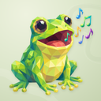
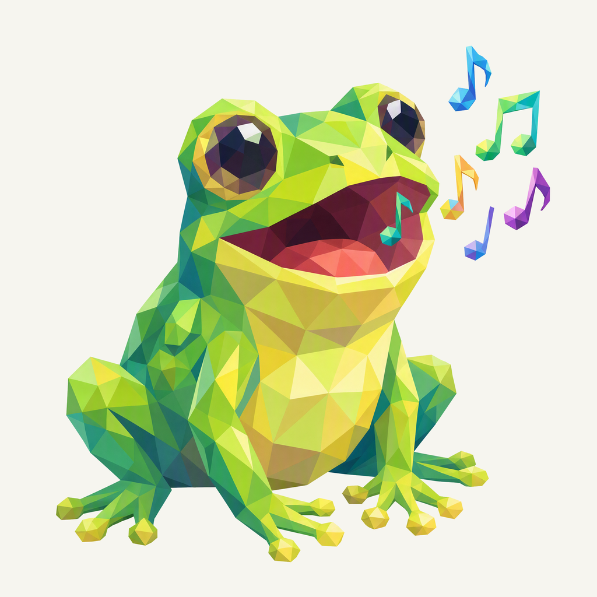
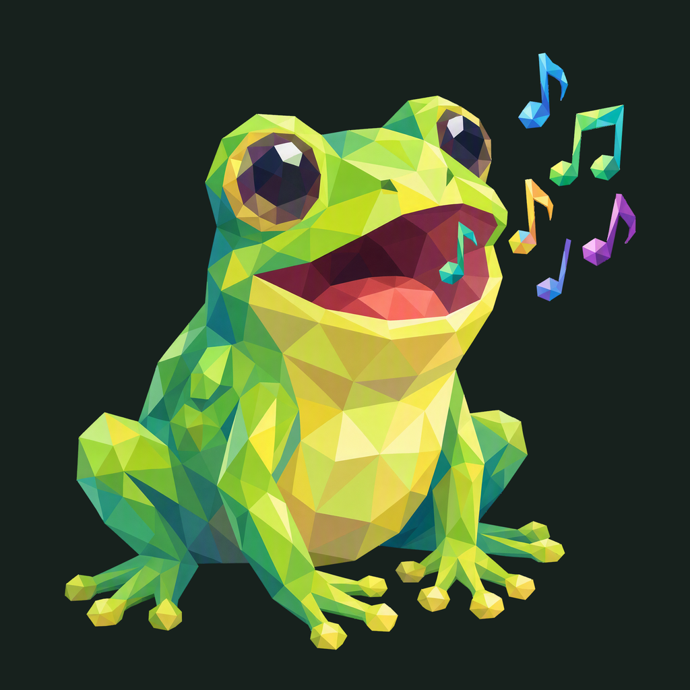

01 / Composition
A diagonal balance
The seated frog carries the lower-left weight. Six colorful musical shapes lead the eye into the upper-right space.
Animal family · First study
The familiar singing frog, refined facets, and a quiet sage setting.
Candidate for review
Native 2048 × 2048

01 / Composition
The seated frog carries the lower-left weight. Six colorful musical shapes lead the eye into the upper-right space.
02 / Drawing
Large planes clarify the face and belly. Smaller polygons describe the eyes, mouth, limbs, and familiar expression.
03 / Presentation
Pale sage, quiet curved motifs, fine grain, and shallow shadows give the green character a tactile setting.
The same artwork at actual display sizes.

At 16 px the green silhouette and open mouth lead; individual facets and note shapes merge. A dedicated favicon treatment can be considered after the family direction is selected.
A proposed sage background, with colors sampled from this frog.
Select a swatch to copy its hex value.
One foreground, checked on two contrasting backgrounds.


Azure Foundry · gpt-image-2 · native 2048 × 2048
Loading prompt…


{kind=link}
{kind=link}
{kind=link}
{kind=link}
{kind=link}